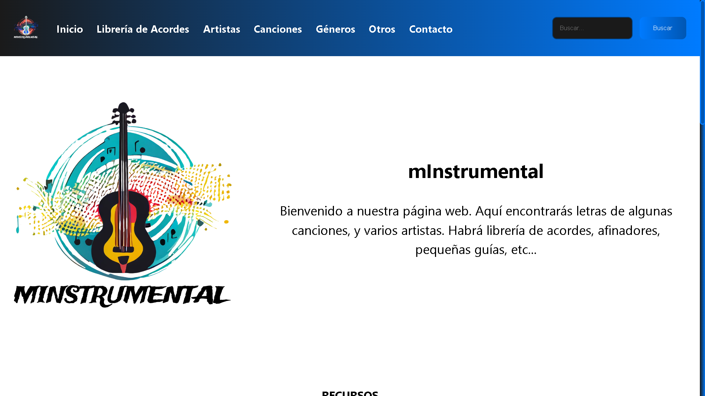
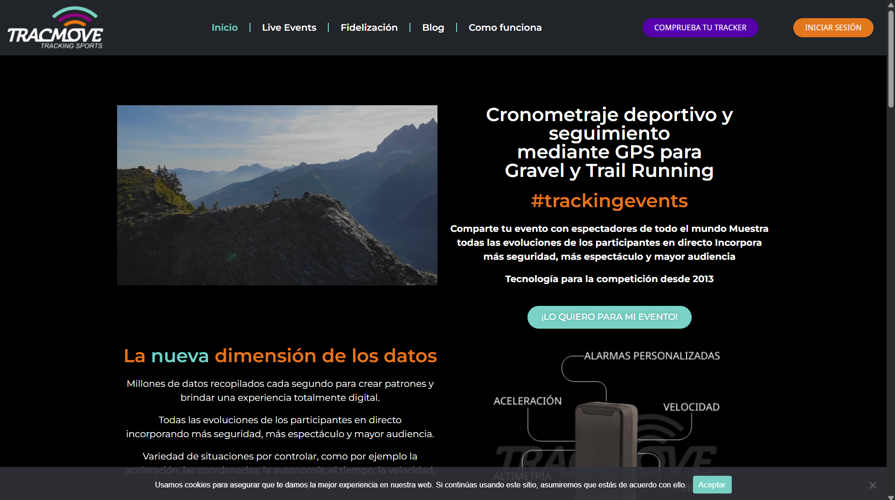
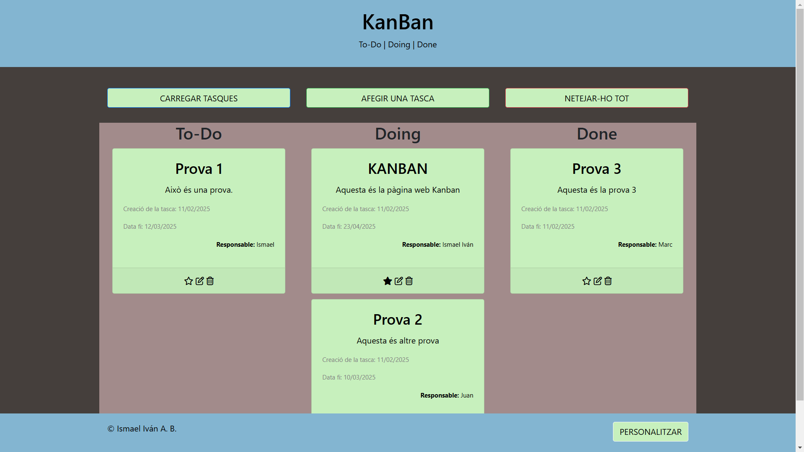

Ismael Iván Aucapina Benalcázar
Desarrollador de Aplicaciones Web · Técnico en Sistemas Microinformáticos y Redes
Sobre mí
Soy un joven que le encanta el ámbito de la informática, videojuegos y música. Mi enfoque se centra en buscar nuevas experiencias laborales para tener más conocimientos en nuevos ámbitos, para luego aplicarlas en futuros proyectos y trabajos.
Me adapto fácilmente al trabajo en equipo, me encanta la organización, y la puntualidad en hacer y entregar proyectos. Tengo mucha paciencia, me gusta investigar y obtener información para mejorar los trabajos.
Fortalezas técnicas:
- Reparación Software/Hardware.
- Gestión de dominios y protocolos.
- CMS (Wordpress, Prestashop).
- Desarrollo Web (HTML/CSS).
- Adaptabilidad en OS (Linux, Win, ChromeOS).
Conocimientos Musicales
La música es mi vía de escape y una fuente de disciplina. Domino varios instrumentos que me han ayudado a desarrollar la paciencia y el oído para los detalles:
Educación
Ciclo Formativo Grado Superior - Institut Rafael Campalans (2023 - 2025)
CFGS Desarrollador de Aplicaciones Web.
Ciclo Formativo Grado Medio - Institut Rafael Campalans (2021 - 2023)
CFGM Técnico en Sistemas Microinformáticos y Redes.
ESO - Institut Salvador Sunyer i Aimeric (2016 - 2020)
Educación Secundaria Obligatoria.
Experiencia Laboral
Tracmove Tracking Sports - Desarrollador de Aplicaciones Web (2024 - 2026)
- Uso de APIs y automatización.
- Rediseño web corporativo.
- Desarrollo en Laravel y C#.
- Asesoría en Social Media.
Aceena Computers - Atención al cliente (2024 - 2026)
Cajero, reponedor, organización y asesoramiento técnico directo al cliente.
Institut Salvador Sunyer i Aimeric - Prácticas SMR (2022 - 2023)
383 horas de experiencia técnica.Reparación de equipos, configuración de redes/DNS, aplicación de GPOs y seguridad informática.
Habilidades Técnicas
Lenguajes y Web
Sistemas y Redes
Proyectos Destacados

mInstrumental
Proyecto personal y final de CFGS centrado en música e instrumentos. (Página activa hasta el 28-05-2026)
Ver sitio
